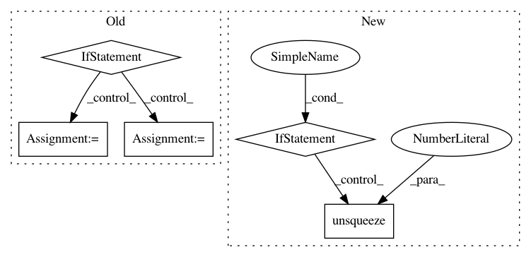

9c309a959052ec40cf92cf4baa3894f5118cf8c4,se3cnn/blocks/point_gated_block.py,PointGatedBlock,forward,#PointGatedBlock#,46
Before Change
def forward(self, input, difference_mat, relative_mask=None):
y = self.conv(input, difference_mat, relative_mask)
if self.scalar_act is None and self.gate_act is None:
z = y
else:
if len(difference_mat.size()) == 4:
batch, N, _M, _ = difference_mat.size()
if len(difference_mat.size()) == 3:
N, _M, _ = difference_mat.size()
size_out = sum(mul * (2 * n + 1) for n, mul in enumerate(self.repr_out))
if self.gate_act is not None:
g = y[:, size_out:]
g = self.gate_act(g)
begin_g = 0 // index of first scalar gate capsule
z = y.new_empty((y.size(0), size_out, y.size(2)))
begin_y = 0 // index of first capsule
for n, mul in enumerate(self.repr_out):
if mul == 0:
continue
dim = 2 * n + 1
// crop out capsules of order n
field_y = y[:, begin_y: begin_y + mul * dim] // [batch, feature * repr, N]
if n == 0:
// Scalar activation
if self.scalar_act is not None:
field = self.scalar_act(field_y)
else:
field = field_y
else:
if self.gate_act is not None:
// reshape channels in capsules and capsule entries
field_y = field_y.contiguous()
field_y = field_y.view(batch, mul, dim, N) // [batch, feature, repr, x, y, z]
// crop out corresponding scalar gates
field_g = g[:, begin_g: begin_g + mul] // [batch, feature, x, y, z]
begin_g += mul
// reshape channels for broadcasting
field_g = field_g.contiguous()
field_g = field_g.view(batch, mul, 1, N) // [batch, feature, repr, x, y, z]
// scale non-scalar capsules by gate values
field = field_y * field_g // [batch, feature, repr, x, y, z]
field = field.view(batch, mul * dim, N) // [batch, feature * repr, x, y, z]
del field_g
else:
field = field_y
del field_y
z[:, begin_y: begin_y + mul * dim] = field
begin_y += mul * dim
del field
return z
After Change
return y
has_batch = difference_matrix.dim() == 4
if not has_batch:
difference_matrix = difference_matrix.unsqueeze(0)
y = y.unsqueeze(0)
batch, N, _M, _ = difference_matrix.size()
size_out = sum(mul * (2 * l + 1) for l, mul in enumerate(self.repr_out))
In pattern: SUPERPATTERN
Frequency: 3
Non-data size: 5
Instances
Project Name: mariogeiger/se3cnn
Commit Name: 9c309a959052ec40cf92cf4baa3894f5118cf8c4
Time: 2019-07-08
Author: geiger.mario@gmail.com
File Name: se3cnn/blocks/point_gated_block.py
Class Name: PointGatedBlock
Method Name: forward
Project Name: PIQuIL/QuCumber
Commit Name: 10bdd46d76d35cfba3a484b007ea3e14af801813
Time: 2019-12-09
Author: emerali@users.noreply.github.com
File Name: qucumber/rbm/binary_rbm.py
Class Name: BinaryRBM
Method Name: effective_energy_gradient
Project Name: ikostrikov/pytorch-a2c-ppo-acktr
Commit Name: 4586366c1018257dd448d62f1fc7534e3f5a4338
Time: 2017-11-23
Author: ikostrikov@gmail.com
File Name: enjoy.py
Class Name:
Method Name: